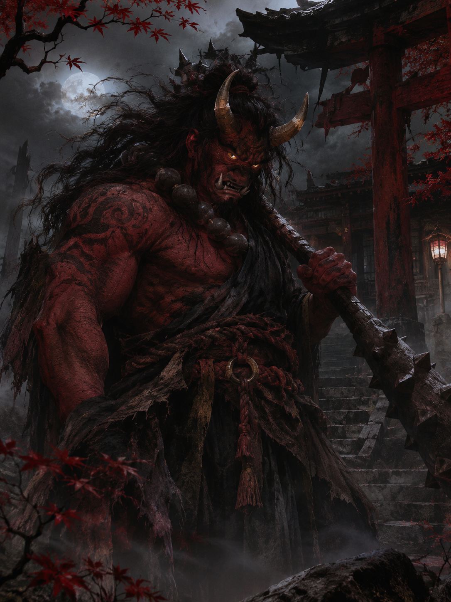
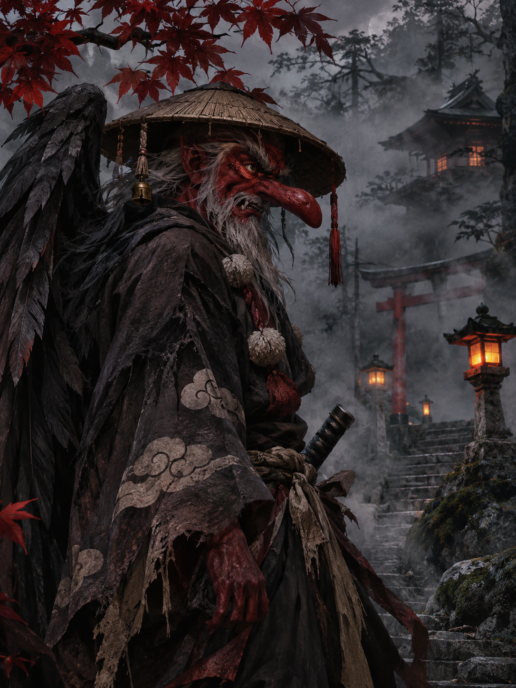
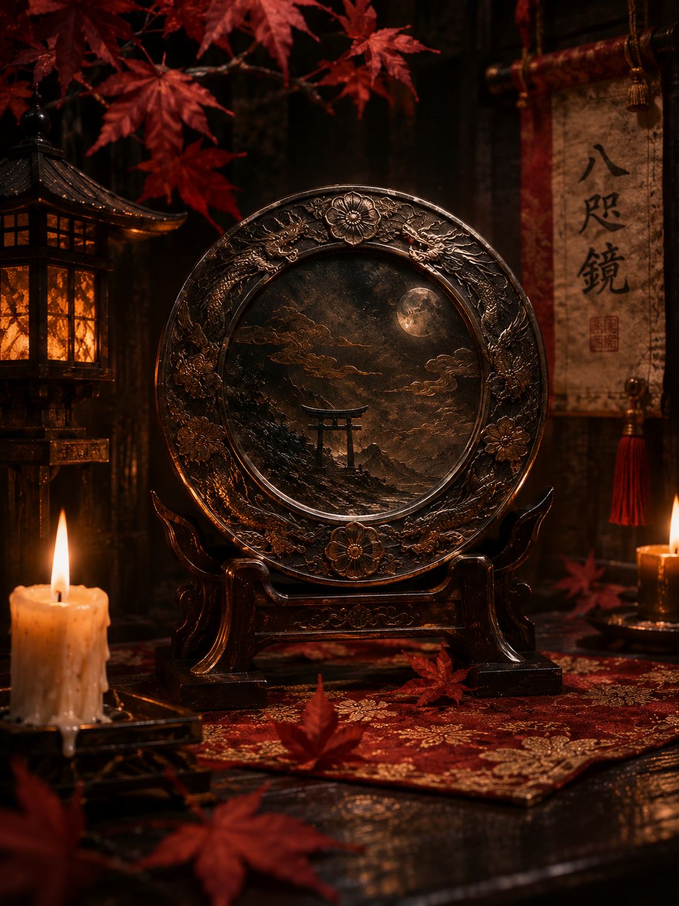

01
狐
Кицунэ
Лиса-оборотень
Хитрый и загадочный дух, способный принимать человеческий облик.
日本の伝説 · ЯПОНСКИЕ ПРЕДАНИЯ
Там, где исчезает свет фонарей, пробуждаются забытые легенды.
За красными воротами тории скрывается мир загадочных существ, древних поверий, мистических храмов и историй, которые передавались из поколения в поколение.
ПРИКОСНОВЕНИЕ К НЕИЗВЕДАННОМУ
Японский фольклор наполнен историями о духах, сверхъестественных существах и необычных событиях. Особое место в нём занимают ёкаи — загадочные создания, способные помогать людям, обманывать их или испытывать их смелость.
Легенды о Кицунэ, Тэнгу и Они сохранились в сказаниях, театральных представлениях, произведениях искусства и современных историях.
Откройте древнюю книгу, исследуйте тайные места и узнайте, какие истории скрывает ночная Япония.
妖怪 · СВЕРХЪЕСТЕСТВЕННЫЕ СУЩЕСТВА
Три загадочных существа, о которых рассказывают японские предания.
Лиса-оборотень
Хитрый и загадочный дух, способный принимать человеческий облик.

02Могущественный демон
Грозное рогатое существо, известное своей огромной силой.

03Горный дух
Таинственный обитатель гор и лесов, связанный с ветром и боевыми искусствами.
古い物語 · ДРЕВНИЕ СКАЗАНИЯ
Откройте старинную книгу и отправьтесь в путешествие по страницам народной сказки.
桃太郎
Давным-давно старушка нашла в реке огромный персик. Из него появился необычный мальчик, которому было суждено стать героем.
Вместе с верными спутниками Момотаро отправляется в опасное путешествие к острову Они.
夜の物語 · ИСТОРИИ ПОСЛЕ ЗАКАТА
Три мистических рассказа, вдохновлённых атмосферой японского фольклора.
Каждую полночь в пустом храме загорается фонарь, хотя туда никто не входит.
В бамбуковом лесу появляется дорога, которую можно увидеть только ночью.
Из глубины старого колодца доносится голос, повторяющий имена прохожих.
言い伝え · НАРОДНЫЕ ПОВЕРЬЯ
Нажмите на карточку, чтобы раскрыть историю или значение обычая.
Что означают красные ворота у японских святилищ?
Тории обозначают переход к священному пространству синтоистского святилища. Их часто устанавливают у входа на территорию храма.
Почему у некоторых храмов стоят каменные лисы?
Лисы считаются посланниками божества Инари. Их статуи можно увидеть возле многих святилищ, посвящённых Инари.
Почему в Японии любят подвешивать колокольчики?
Летние колокольчики фурин ценят за нежное звучание, которое ассоциируется с прохладой. В разных традициях звону также приписывали защитное или очищающее значение.
Для чего используют японские талисманы?
Офуда и омамори — предметы, связанные с религиозными традициями Японии. Их используют как обереги и символы благопожеланий.
Зачем на празднике Сэцубун бросают бобы?
Во время Сэцубун существует обычай мамэмаки: люди бросают жареные соевые бобы, символически прогоняя несчастья и приглашая удачу.
Почему цветы сакуры так важны в японской культуре?
Короткое цветение сакуры часто воспринимают как символ красоты и быстротечности жизни. Любование цветами называют ханами.
秘密の神殿 · ЗАПРЕТНЫЕ ТАЙНЫ
За древними дверями скрываются истории, которые не рассказывают при свете дня.
Древняя дверь откроет одно из забытых сказаний. Каждый раз за ней может скрываться новая история.
Вымышленные мистические истории, вдохновлённые японскими легендами.
古代の宝物 · ЗАБЫТЫЕ СОКРОВИЩА
Изучите предметы, связанные с легендами и традициями Японии.
На пожелтевшей бумаге сохранились строки забытого предания.
Таинственная лисья маска, напоминающая о легендах об оборотнях.

Зеркало, напоминающее о Ята-но Кагами и древних мифах.
謎 · ПРОВЕРКА СМЕКАЛКИ
Без крыльев летит, без голоса поёт, среди деревьев невидимо живёт. Что это?
守護者の試練 · ПРОВЕРКА ЗНАНИЙ
Ответьте на пять вопросов о японском фольклоре и получите звание хранителя легенд.
Вас ждут пять вопросов о ёкаях, древних поверьях и японских традициях.
За знание японского фольклора присваивается звание
Хранитель легенд За гранью сказаний神秘の地図 · ПУТЕШЕСТВИЕ ПО ЛЕГЕНДАМ
Откройте места, связанные с японскими преданиями и традициями.
Каждая точка на карте рассказывает об особенном месте. Нажмите на название, чтобы узнать его историю.
Карта стилизована для оформления сайта и не предназначена для навигации.
Пока люди рассказывают истории, древние предания продолжают жить. Возможно, за следующими воротами скрывается новая тайна.
Вернуться к началу ↑ЛЕГЕНДА О ЁКАЕ